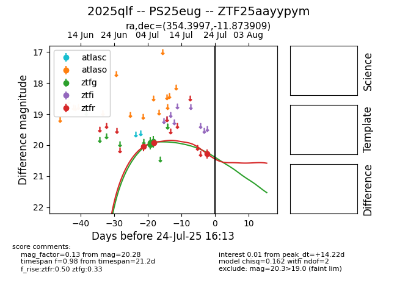

Target 2025qlf at 2025-07-24 16:13, see:
FINK: fink-portal.org/2025qlf
Lasair: lasair-ztf.lsst.ac.uk/objects/2025qlf
ALeRCE: alerce.online/object/2025qlf
TNS: wis-tns.org/object/2025qlf
YSE: ziggy.ucolick.org/yse/transient_detail/2025qlf
alt names
ZTF25aayypym (ztf,fink)
2025qlf (tns,yse)
PS25eug (panstarrs)
coordinates:
equatorial (ra, dec) = (354.3997,-11.87391)
galactic (l, b) = (70.7077,-66.91938)
photometry
last ztfg=19.93, ztfr=20.28
4 ztfg, 3 ztfr detections
